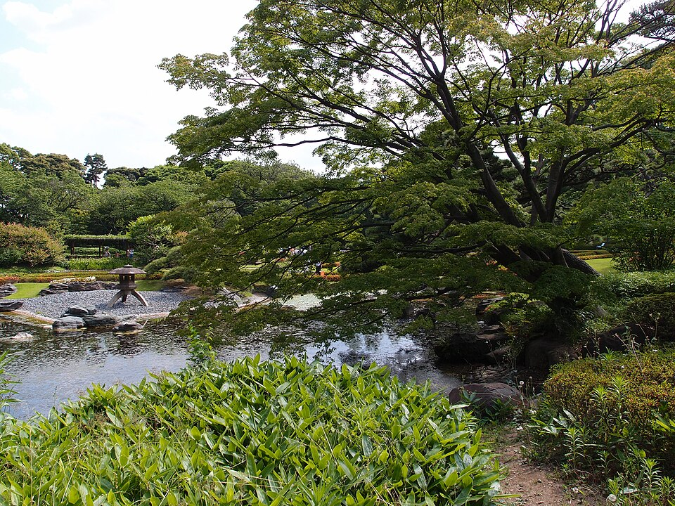
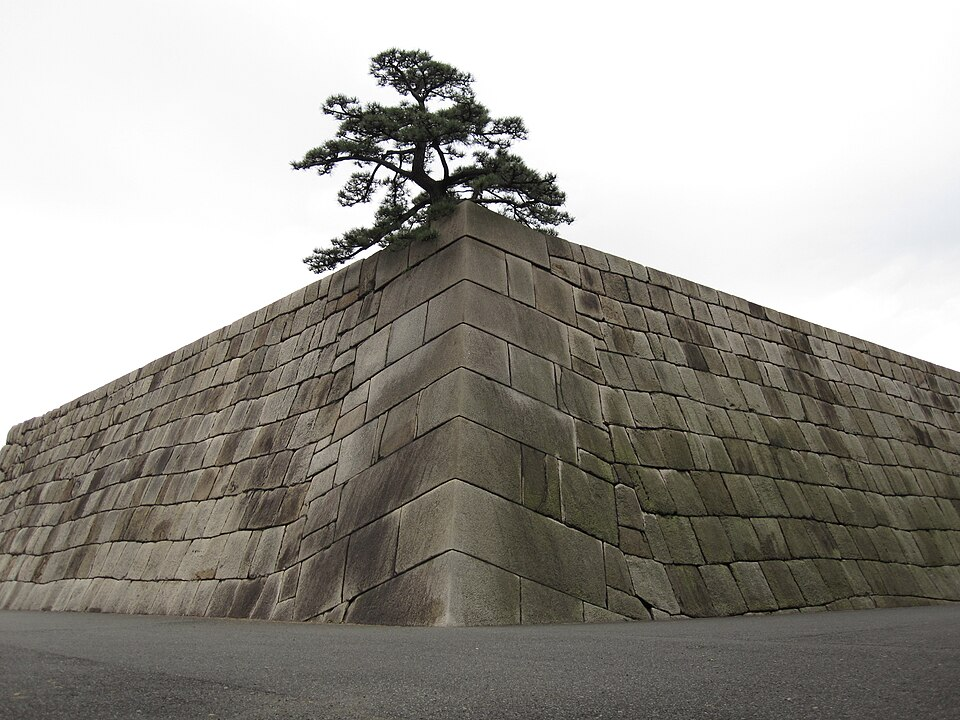
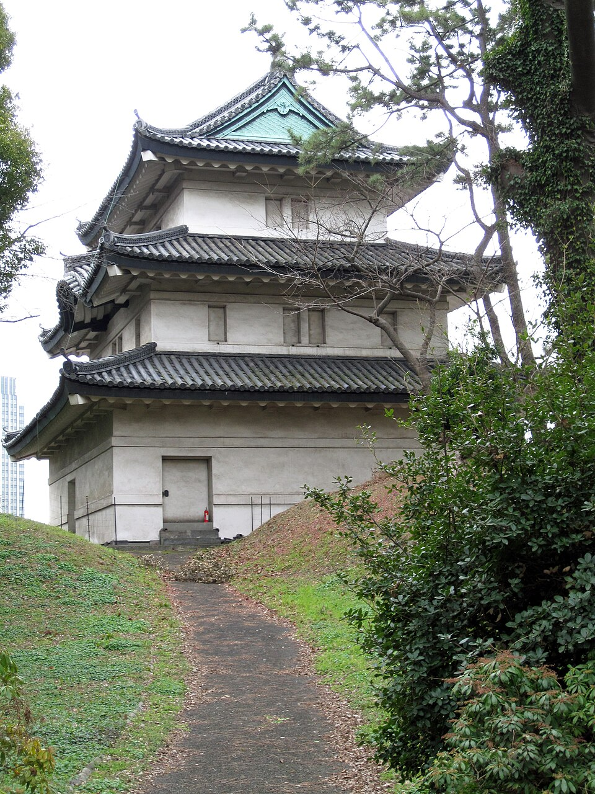
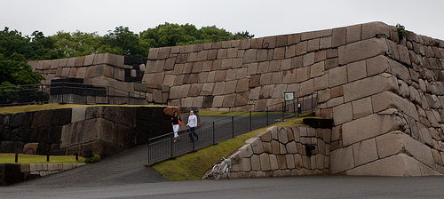

Восточный сад (East Gardens) = замок Edo



.jpg){kind=link}





.jpg){kind=link}
Что это и чем отличается от дворца
Дворец императора и Восточный сад - соседи, но это разные места.
| Восточный сад | Дворец | |
|---|---|---|
| Что это | центр бывшего замка Edo: стены, ворота, караульни, основание главной башни, японский сад | резиденция императора, рабочие здания двора |
| Внутрь | свободно, без записи | только бесплатная экскурсия ~1 ч 15 мин, по записи |
| Когда | вт-чт, сб-вс, 9:00-16:30 (октябрь) | вт-сб, утром и днём |
| Сколько времени | 1-1,5 ч, с остановками до 2 ч | 1 ч 15 мин + регистрация |
С 1603 по 1867 здесь стоял замок сёгунов Tokugawa, отсюда управляли Японией. Восточный сад - это две внутренние части замка: Honmaru (главная цитадель) и Ninomaru (второе кольцо). Их привели в порядок, когда строили нынешний дворец (закончен в 1968), и открыли для всех. Площадь около 21 га.
⏱ Время: официальной цифры нет. Моя оценка по размеру и маршруту (~2 км по кругу): 1-1,5 часа спокойным шагом с фото, до 2 часов, если сидеть у пруда.
Как добраться
JR Akihabara: голубая Keihin-Tohoku (на Ofuna, платформа 4) или зелёная Yamanote (на Tokyo / Shinagawa, платформа 3), 2 остановки: Kanda, Tokyo. Выход Marunouchi North (丸の内北口), дальше около 700 м на запад к воротам Otemon через ров.
Ворота Otemon
Главные ворота замка: двойные ворота с внутренним двором, где нападающих можно было обстреливать с трёх сторон. У входа берёшь бесплатный жетон, на выходе отдаёшь.
Караульни Doshin-bansho и Hyakunin-bansho
Деревянные посты охраны на подъёме в замок. Hyakunin-bansho - длинная караульня, название переводится «пост ста человек». Сразу за ней ворота Nakanomon с огромными каменными блоками стен.
Honmaru: главная цитадель
Большая лужайка на месте дворца сёгуна. Здания сгорали несколько раз и не восстанавливались, остались газон, деревья, сторожевая постройка Fujimi-tamon на южном краю. Тихо и просторно, посреди делового центра.
Tenshudai: основание главной башни
Главную башню замка закончили в 1607. Каменное основание было около 14 м, на нём стояла самая большая башня замка в Японии. В 1657 она сгорела в большом пожаре Meireki и больше не строилась, остались только камни, сейчас около 10 м. Наверх ведёт пандус, сверху вид на лужайку Honmaru. Рядом - макет башни в том виде, как она была (по памфлету Управления двора).

.jpg){kind=link}
Склон Shiomizaka
Спуск из Honmaru в Ninomaru. Название значит «склон, откуда видно море»: когда-то отсюда был виден залив.
Сад Ninomaru
Прогулочный японский сад вокруг пруда, восстановленный по образцу сада времён Edo, и рощица в стиле старой равнины Musashino (памфлет Управления двора). Карпы, каменные фонари, мостики. Самое красивое место, тут можно посидеть.
Выход: Otemon или Hirakawamon
Обратно через Otemon (10 мин до Tokyo Station и 10-15 мин до моста Nijubashi) или через Hirakawamon к метро Takebashi. Третий выход, Kitahanebashimon, ведёт к парку Kitanomaru.
Когда идти: среда 14.10
Сад, площадь у дворца и мост Nijubashi - всё в 10 минутах от Tokyo Station, поэтому удобно поставить в день отъезда или в среду/четверг, если остаёшься до пятницы.
| 11:00 | выезд из отеля, чемодан оставить в отеле или в камере хранения на Tokyo Station |
| 11:15 | JR до Tokyo, 4 мин |
| 11:30-13:00 | Восточный сад: Otemon → Honmaru → Tenshudai → Ninomaru |
| 13:00-13:45 | снаружи дворца: площадь, мост Nijubashi, ворота Sakuradamon |
| после | обед в Marunouchi, вокзал рядом |
В среду в саду по памфлету обычно бывают бесплатные экскурсии с гидом (ср и сб, утром и днём). Экскурсия внутрь дворца тоже идёт вт-сб, ~1 ч 15 мин, запись заранее или в тот же день. Точное время экскурсий Управление двора в памфлете не пишет; туристические сайты называют 10:00 и 13:30 - проверить на сайте Kunaicho перед поездкой.
Погода на ср 14.10 (Open-Meteo, прогноз от 13.10): осадков 0,6 мм, до 15:00 сухо.